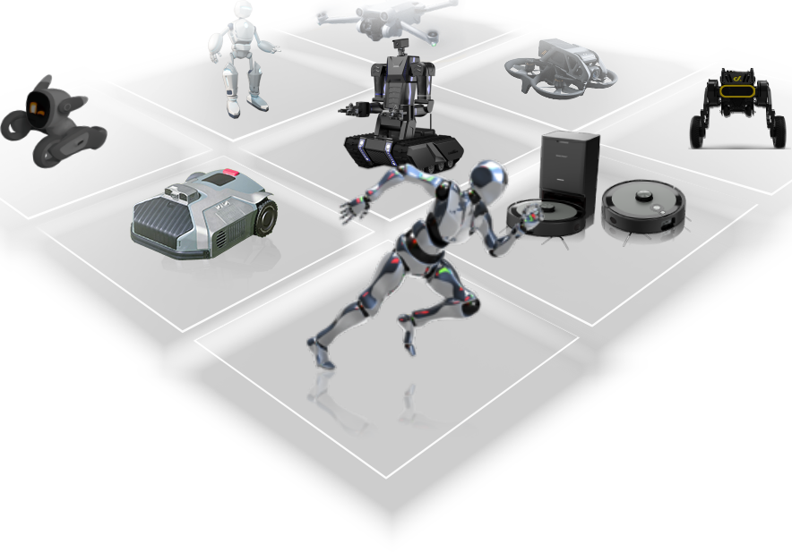
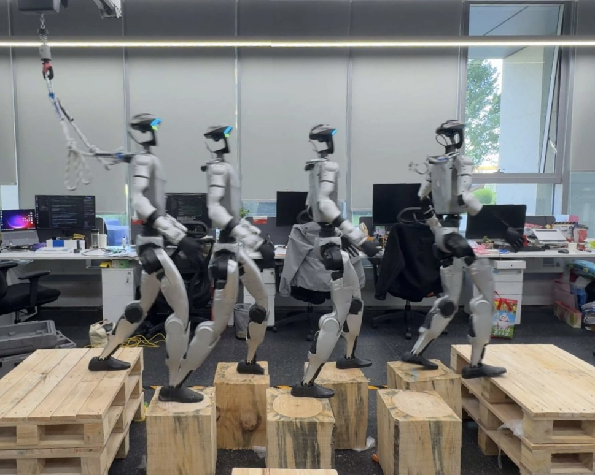
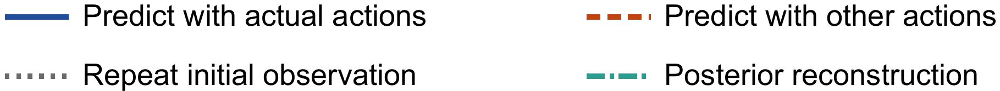

D-Robotics/About us
About D-Robotics
Over the past 10 years, D-Robotics has evolved into a leading platform for intelligent robot development. We have transformed our vision into reality, bringing true intelligence to machines that seamlessly integrate into everyday life.
D-Robotics provides global robot developers with high-performance computing solutions and a comprehensive development infrastructure, simplifying the creation of smarter robots with our new development paradigm.

Frontier/Technical series
D-Robotics Frontier
Our technical series for frontier exploration and deep exchange — sharing our latest progress and breakthroughs across research and engineering practice.
More than a showcase of what we are building, Frontier is a platform for deep technical exchange — bringing researchers, engineers, developers and robotics enthusiasts together to explore new ideas, exchange perspectives and think about what comes next for robotics.
Frontier #02 WM-LOCO: Predictive Visual Locomotion #02

D-Robotics Frontier #02/arXiv 2609.02542
World-Model-Augmented Visual Locomotion for Humanoids on Foothold-Constrained Terrain
WM-LOCO
How does a world model help humanoids cross stepping stones?
Yuxi LiuRobotics Algorithm Engineer, D-Robotics
with Lijun Han, Ziming Wang, Ao Zhang, Cong Yang and Wei Sui
D-Robotics20 slides · 5 chaptersarxiv.org/abs/2609.02542
01 Results/Real robot
Zero-shot on a real humanoid
Unitree G1 · one onboard depth camera + proprioception · no real-world training or tuning
Stepping stones 10 / 10
Gap 9 / 10
Balance beam 9 / 10
Stairs 9 / 10
Hardware trials
92.5%
37 / 40 hardware trials succeeded
| Real course | Dimension |
|---|---|
| Stepping stones | 25 cm tops, 45 cm gaps |
| Stairs | 15 cm risers, 25 cm treads |
| Gap | 0.80 m |
| Balance beam | 0.10 m wide, 3 m long |
Policy runs onboard (Jetson Orin) with an Intel RealSense D435. Ten trials per terrain.
02 The problem/Terrain
Foothold-constrained terrain
Sparse, discontinuous or narrow support — a single misplaced step can cause a fall
Continuous terrain
Dense support. A foot a few centimetres off is corrected within the same step or the next one.
Foothold-constrained terrain
Gaps, stepping stones, narrow stair treads, balance beams. A foot outside the support can directly cause a fall.
02 The problem/Perception vs learning
Seeing is not enough
Vision is necessary — but a PPO policy with the same depth input still fails
Step 1
Give it eyes
Blind policies feel for stairs with their feet — that can work well.
Between stepping stones there is nothing to probe: finding a gap means stepping into it.
WM-LOCO sees with one head-mounted depth camera — no offboard perception, no terrain map.
0%
Stepping stones
0%
Gaps
0%
Balance beams
89.9%
Stairs
PPO baseline · mean success over Easy / Medium / Hard (Table I)
Same as WM-LOCO
Sensory inputs (incl. depth), rewards, proprioceptive encoder, motion prior, MoE backbone, training budget. Only the world model is missing.
Why? our intuition
Many precise steps in a row. Early on, the first misstep ends the episode, so a full crossing is almost never experienced.
02 The problem/Related work
How the field copes today
Strong results — paid for with extra machinery
| Approach | Key idea | Extra machinery |
|---|---|---|
| BeamDojo RSS 2025 | First walk on flat ground while seeing the sparse footholds — a miss costs reward, not a fall (an “invisible safety floor”); then the real terrain. Separate critics for dense and sparse foothold rewards. | Multi-stage training |
| RPL 2026 | Train privileged expert policies, distil them into a depth-based student. | Teacher–student |
| PLANC 2026 | Reduced-order physics references + multi-stage teacher–student distillation. | References + distillation |
| Footstep planning 2026 | Plan footsteps online with mixed-integer quadratic programming. | Online optimisation |
Our question
Can one single-stage, end-to-end policy learn this — without extra stages, a teacher, foothold labels or an online planner?
03 Method/Framework
WM-LOCO: learn to anticipate
A world model and a PPO actor–critic, trained together (Fig. 2)
World model: learn what happens next if I take this action.
- 01RSSM world modellearns action-conditioned dynamics from depth + proprioception
- 02Predictive contextits memory ht becomes a policy feature; depth reaches the policy only this way
- 03One stagePPO and world model train jointly; no world-model pretraining
03 Method/World model
Inside the world model: an RSSM
Infer the robot's state, then predict how it evolves under the actions
Training loss
- reconstruct proprioception (symlog) and depth
- predict the task reward
- KL: prior → posterior (β = 0.5), posterior → prior (β = 0.1), free bits 1
Why it learns to predict
The prior never sees the current frame. Matching it to the posterior forces the dynamics to predict what body and camera will report next.
03 Method/Policy & training
Policy and training
Predictive context in, actions out — one stage, no rollouts at run time
- Policy input: proprioception, its last 5 control steps, velocity command and fWM = gψ(ht)
- Depth enters the policy only through the world model
- Two clocks: policy 50 Hz, world model 10 Hz; the feature is held between updates
- MoE backbone + adversarial motion prior (the PPO baseline has both)
- At deployment: actions come straight from the actor — no model rollout, no action search
- Training: LPPO + LWM on the same on-policy data; no world-model pretraining, no teacher, no planner, no per-step foothold targets
| Contact-region reward | Stairs | Stones |
|---|---|---|
| Stair boundary (off footprint) | −0.05 | — |
| Riser penetration | −0.5 | — |
| Sequential tread contact | +0.5 | — |
| Stone top contact | — | +4.0 |
Honest note
These terrain-aware rewards (Table III) reward valid support and penalise invalid contact — they never say where each foot should go.
04 Evidence/Table I
Simulation results
Mean success over Easy / Medium / Hard, 4 terrain classes (Table I)
| Terrain · success (%) | PPO | GLAD | CReF | WM-LOCO |
|---|---|---|---|---|
| Stairs | 89.9 | 81.4 | 83.7 | 94.0 |
| Gaps | 0.0 | 91.9 | 57.3 | 96.0 |
| Stepping stones | 0.0 | 49.4 | 92.3 | 96.9 |
| Balance beam | 0.0 | 63.2 | 77.0 | 92.1 |
94.8%
four-terrain mean (GLAD 71.5%, CReF 77.6%)
> 90%
on every terrain class — the only method
Hard tier
stones 96.4% (GLAD 7.7%) · beam 80.7% (CReF 41.1%) · 2 m gaps 90.0% (CReF 0%)
04 Evidence/Combined course
One episode, all four terrains 95.4%
Combined course in simulation: stairs · stones · gap · beam · stairs. No terrain label, no mode switch.
Combined course95.4% success
2.0 m gap · Hard
Stairs
04 Evidence/Fig. 5
Ablation: the world model is essential
Gap traversal across gap widths (Fig. 5)
- ✓Full model98.6–99.6% at every tested width
- ✕Without the world model0% from the 0.4–0.5 m range onward
- ✕Without MoEnear-total failure beyond the smallest range
- –Without the history encodermainly wider gaps suffer
MoE and history help the policy use the world model's context.
04 Evidence/Table IV
Not just success: a better gait
Stairs, where both PPO and WM-LOCO succeed (Table IV)
+25.6%
stride length
−28.9%
pelvis acceleration
Mean relative change across tiers. Steps per metre and normalized mechanical energy also drop at every tier.
| Metric (Easy / Medium / Hard) | PPO | WM-LOCO |
|---|---|---|
| Stride length ↑ (m) | 0.45 / 0.42 / 0.40 | 0.52 / 0.53 / 0.54 |
| Steps per metre ↓ | 4.91 / 5.04 / 5.15 | 4.45 / 4.26 / 4.07 |
| Normalized mechanical energy ↓ | 1.01 / 1.21 / 1.43 | 0.95 / 1.01 / 1.14 |
| Pelvis acceleration ↓ (m/s²) | 6.96 / 8.26 / 9.89 | 5.28 / 5.85 / 6.58 |
| Action rate ↓ | 3.94 / 6.19 / 8.14 | 2.61 / 2.88 / 3.32 |
| Torque / limit | 0.56 / 0.62 / 0.67 | 0.59 / 0.63 / 0.66 |
04 Evidence/Open-loop prediction
Can the world model predict the future?
One observation, the recorded actions, then 1.5 s with no new observations
Ground truthWM predictionError
Protocol
- Initialise from depth + proprioception
- Feed the recorded actions; predict 15 updates (1.5 s) ahead
- Compare with Isaac Lab measurements
Left: ground truth · middle: prediction · right: error
04 Evidence/Fig. 3
It predicts — and the actions matter
Stepping stones, 1.5-s horizon, four conditions (Fig. 3)

- Depth: actual actions beat repeating the first frame and beat other actions over the whole 1.5 s
- Joints at 1.5 s: position and velocity errors stay close to the reconstruction reference (Fig. 3c)
- Reward at 1.0 s: MAE 0.072, correlation 0.887
Predictive context, not a planner
No perfect foresight of arbitrary actions, no rendering of the future while walking, no action search.
05 Wrap-up/Summary
Takeaways and limitations
What WM-LOCO shows — and what it does not yet
- 01Seeing is necessary, not sufficientWith the same depth input, a strong PPO policy still fails on stones, gaps and beams.
- 02Predict, then actA jointly trained world model turns depth + proprioception into predictive context — one stage, no teacher, no planner.
- 03It transfers94.8% mean success in simulation; 92.5% zero-shot on a real Unitree G1.
Limitations
- Evaluated on discrete footholds and narrow support; varying-height stones and outdoor terrain not yet evaluated
- Unitree G1 only
- Relies on depth — next: stereo RGB, toward locomotion and manipulation
Teaching robots not only how to act, but what their actions lead to.
Community/Stay in touch
Join the D-Robotics community
Scan to follow for releases, demos and community events.
Paper: arxiv.org/abs/2609.02542
D-Robotics Frontier #02
Thank you.
Up nextQ&A
Teaching robots not only how to act, but what their actions lead to.
WM-LOCO · arXiv 2609.02542
Yuxi Liu · D-Robotics